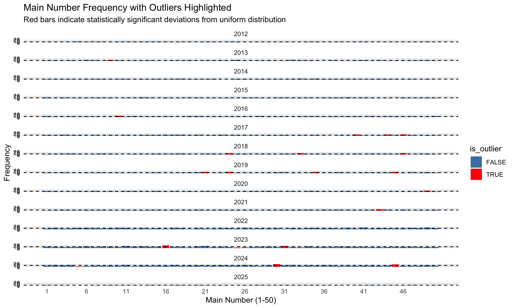
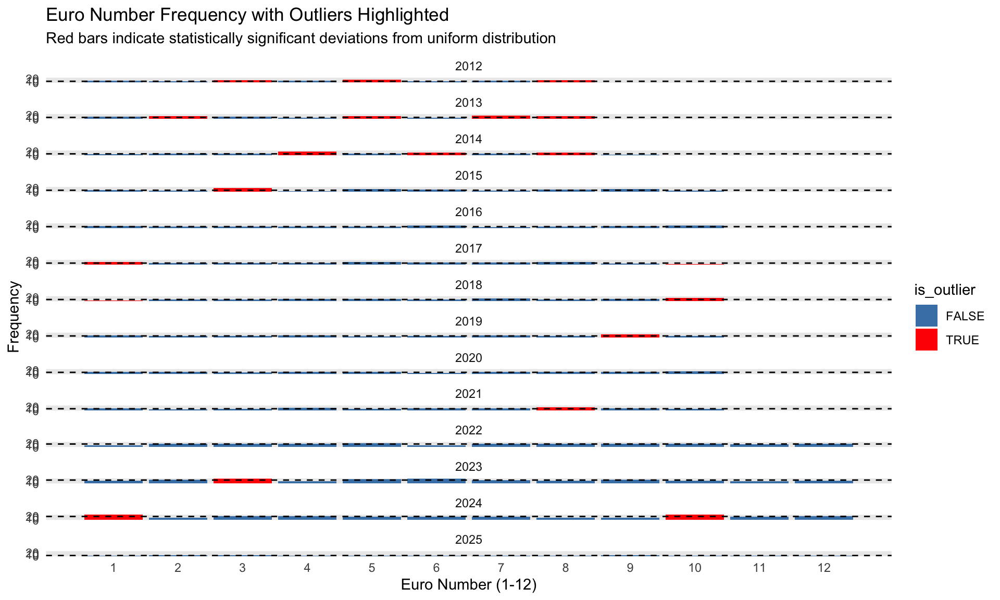
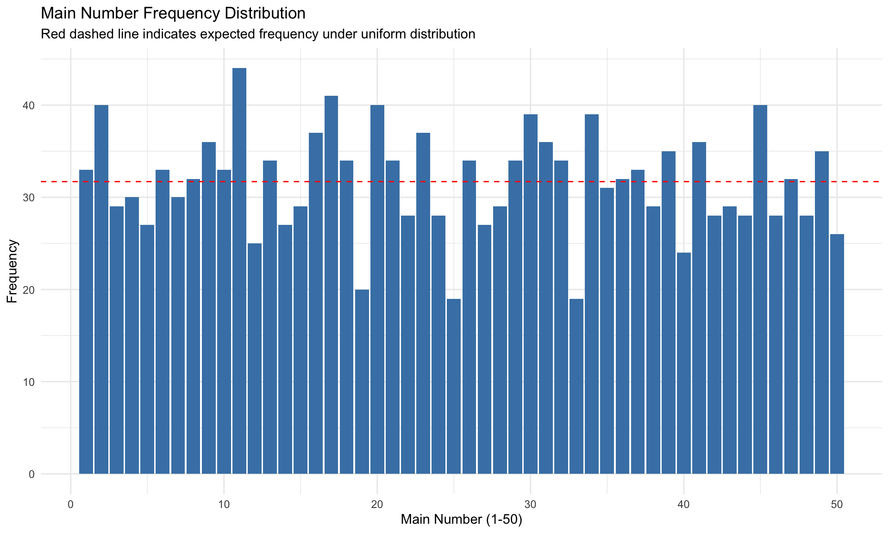
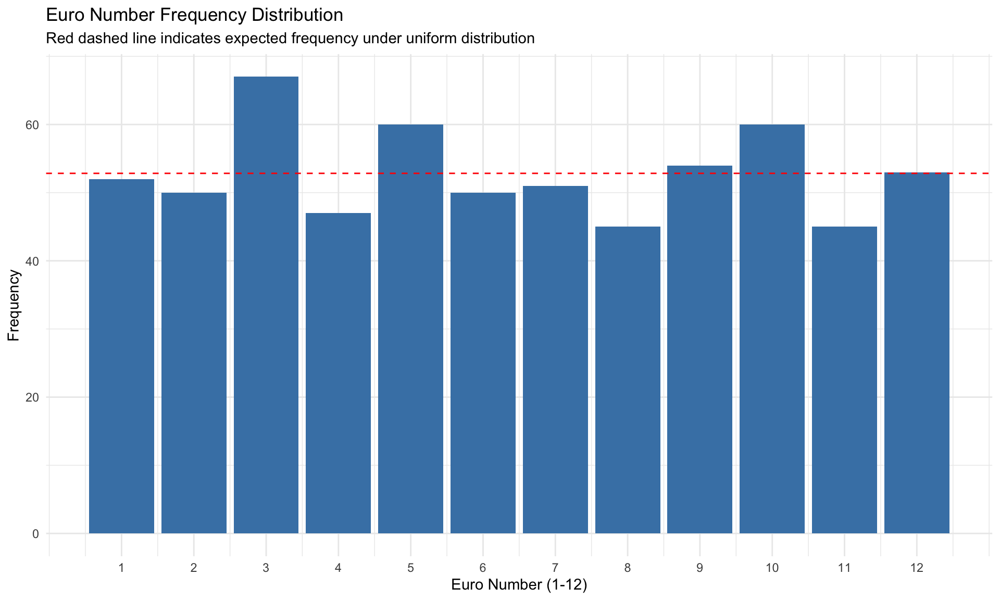

# Create a function to calculate frequencies
calculate_frequencies <- function(data, number_type, max_number) {
# Reshape data to long format
if (number_type == "main") {
long_data <- data %>%
select(year, main_1, main_2, main_3, main_4, main_5) %>%
pivot_longer(
cols = starts_with("main_"),
names_to = "position",
values_to = "number"
)
} else {
long_data <- data %>%
select(year, euro_1, euro_2) %>%
pivot_longer(
cols = starts_with("euro_"),
names_to = "position",
values_to = "number"
)
}
# Calculate frequencies by year and number
freq_data <- long_data %>%
group_by(year, number) %>%
summarise(frequency = n(), .groups = "drop") %>%
# Add missing numbers with zero frequency
complete(year, number = 1:max_number, fill = list(frequency = 0))
return(freq_data)
}
# Calculate frequencies
main_freq <- calculate_frequencies(results, "main", 50)
euro_freq <- calculate_frequencies(results, "euro", 12)
# Add outlier detection based on uniform distribution
# For main numbers (1-50)
main_outlier_analysis <- main_freq %>%
group_by(year) %>%
mutate(
# Expected frequency under uniform distribution
expected = sum(frequency) / 50,
# Calculate deviation from expected
deviation = frequency - expected,
# Calculate z-score (standardized deviation)
z_score = (frequency - expected) / sqrt(expected * (1 - 1 / 50)),
# Flag significant outliers (|z| > 1.96 for 95% confidence)
is_outlier = abs(z_score) > 1.96
) %>%
ungroup()
# For euro numbers (1-12)
euro_outlier_analysis <- euro_freq %>%
group_by(year) %>%
mutate(
# Expected frequency under uniform distribution
expected = sum(frequency) / 12,
# Calculate deviation from expected
deviation = frequency - expected,
# Calculate z-score (standardized deviation)
z_score = (frequency - expected) / sqrt(expected * (1 - 1 / 12)),
# Flag significant outliers (|z| > 1.96 for 95% confidence)
is_outlier = abs(z_score) > 1.96
) %>%
ungroup()
# Visualize outliers for main numbers
main_outlier_plot <- ggplot(
main_outlier_analysis,
aes(x = number, y = frequency, fill = is_outlier)
) +
geom_bar(stat = "identity") +
scale_fill_manual(values = c("FALSE" = "steelblue", "TRUE" = "red")) +
facet_wrap(~year, ncol = 1) +
scale_x_continuous(breaks = seq(1, 50, by = 5)) +
geom_hline(aes(yintercept = expected), linetype = "dashed", color = "black") +
labs(
title = "Main Number Frequency with Outliers Highlighted",
subtitle = "Red bars indicate statistically significant deviations from uniform distribution",
x = "Main Number (1-50)",
y = "Frequency"
) +
theme_minimal()
# Visualize outliers for euro numbers
euro_outlier_plot <- ggplot(
euro_outlier_analysis,
aes(x = number, y = frequency, fill = is_outlier)
) +
geom_bar(stat = "identity") +
scale_fill_manual(values = c("FALSE" = "steelblue", "TRUE" = "red")) +
facet_wrap(~year, ncol = 1) +
scale_x_continuous(breaks = 1:12) +
geom_hline(aes(yintercept = expected), linetype = "dashed", color = "black") +
labs(
title = "Euro Number Frequency with Outliers Highlighted",
subtitle = "Red bars indicate statistically significant deviations from uniform distribution",
x = "Euro Number (1-12)",
y = "Frequency"
) +
theme_minimal()
# Display outlier plots
main_outlier_plot

# Summarize outliers in a table
main_outliers_summary <- main_outlier_analysis %>%
filter(is_outlier) %>%
arrange(year, desc(abs(z_score))) %>%
select(year, number, frequency, expected, deviation, z_score)
euro_outliers_summary <- euro_outlier_analysis %>%
filter(is_outlier) %>%
arrange(year, desc(abs(z_score))) %>%
select(year, number, frequency, expected, deviation, z_score)
# Display outlier summaries
if (nrow(main_outliers_summary) > 0) {
knitr::kable(main_outliers_summary, digits = 2)
} else {
cat("No statistically significant outliers found in main numbers.\n")
}| year | number | frequency | expected | deviation | z_score |
|---|---|---|---|---|---|
| 2013 | 9 | 10 | 5.2 | 4.8 | 2.13 |
| 2016 | 10 | 11 | 5.3 | 5.7 | 2.50 |
| 2017 | 37 | 0 | 5.2 | -5.2 | -2.30 |
| 2017 | 40 | 10 | 5.2 | 4.8 | 2.13 |
| 2017 | 44 | 10 | 5.2 | 4.8 | 2.13 |
| 2017 | 46 | 10 | 5.2 | 4.8 | 2.13 |
| 2018 | 24 | 10 | 5.2 | 4.8 | 2.13 |
| 2018 | 33 | 10 | 5.2 | 4.8 | 2.13 |
| 2018 | 46 | 10 | 5.2 | 4.8 | 2.13 |
| 2019 | 21 | 10 | 5.2 | 4.8 | 2.13 |
| 2019 | 24 | 10 | 5.2 | 4.8 | 2.13 |
| 2019 | 35 | 10 | 5.2 | 4.8 | 2.13 |
| 2019 | 45 | 10 | 5.2 | 4.8 | 2.13 |
| 2020 | 49 | 10 | 5.2 | 4.8 | 2.13 |
| 2021 | 43 | 10 | 5.3 | 4.7 | 2.06 |
| 2023 | 16 | 20 | 10.4 | 9.6 | 3.01 |
| 2023 | 25 | 3 | 10.4 | -7.4 | -2.32 |
| 2023 | 31 | 17 | 10.4 | 6.6 | 2.07 |
| 2024 | 30 | 20 | 10.5 | 9.5 | 2.96 |
| 2024 | 45 | 19 | 10.5 | 8.5 | 2.65 |
| 2024 | 5 | 4 | 10.5 | -6.5 | -2.03 |
if (nrow(euro_outliers_summary) > 0) {
knitr::kable(euro_outliers_summary, digits = 2)
} else {
cat("No statistically significant outliers found in euro numbers.\n")
}| year | number | frequency | expected | deviation | z_score |
|---|---|---|---|---|---|
| 2012 | 5 | 16 | 6.83 | 9.17 | 3.66 |
| 2012 | 9 | 0 | 6.83 | -6.83 | -2.73 |
| 2012 | 10 | 0 | 6.83 | -6.83 | -2.73 |
| 2012 | 11 | 0 | 6.83 | -6.83 | -2.73 |
| 2012 | 12 | 0 | 6.83 | -6.83 | -2.73 |
| 2012 | 3 | 12 | 6.83 | 5.17 | 2.06 |
| 2012 | 8 | 12 | 6.83 | 5.17 | 2.06 |
| 2013 | 7 | 18 | 8.67 | 9.33 | 3.31 |
| 2013 | 9 | 0 | 8.67 | -8.67 | -3.07 |
| 2013 | 10 | 0 | 8.67 | -8.67 | -3.07 |
| 2013 | 11 | 0 | 8.67 | -8.67 | -3.07 |
| 2013 | 12 | 0 | 8.67 | -8.67 | -3.07 |
| 2013 | 8 | 16 | 8.67 | 7.33 | 2.60 |
| 2013 | 2 | 15 | 8.67 | 6.33 | 2.25 |
| 2013 | 5 | 15 | 8.67 | 6.33 | 2.25 |
| 2014 | 4 | 22 | 8.67 | 13.33 | 4.73 |
| 2014 | 10 | 0 | 8.67 | -8.67 | -3.07 |
| 2014 | 11 | 0 | 8.67 | -8.67 | -3.07 |
| 2014 | 12 | 0 | 8.67 | -8.67 | -3.07 |
| 2014 | 6 | 16 | 8.67 | 7.33 | 2.60 |
| 2014 | 8 | 16 | 8.67 | 7.33 | 2.60 |
| 2015 | 3 | 20 | 8.67 | 11.33 | 4.02 |
| 2015 | 11 | 0 | 8.67 | -8.67 | -3.07 |
| 2015 | 12 | 0 | 8.67 | -8.67 | -3.07 |
| 2016 | 11 | 0 | 8.83 | -8.83 | -3.10 |
| 2016 | 12 | 0 | 8.83 | -8.83 | -3.10 |
| 2017 | 11 | 0 | 8.67 | -8.67 | -3.07 |
| 2017 | 12 | 0 | 8.67 | -8.67 | -3.07 |
| 2017 | 1 | 16 | 8.67 | 7.33 | 2.60 |
| 2017 | 10 | 2 | 8.67 | -6.67 | -2.37 |
| 2018 | 11 | 0 | 8.67 | -8.67 | -3.07 |
| 2018 | 12 | 0 | 8.67 | -8.67 | -3.07 |
| 2018 | 10 | 17 | 8.67 | 8.33 | 2.96 |
| 2018 | 1 | 2 | 8.67 | -6.67 | -2.37 |
| 2019 | 11 | 0 | 8.67 | -8.67 | -3.07 |
| 2019 | 12 | 0 | 8.67 | -8.67 | -3.07 |
| 2019 | 9 | 16 | 8.67 | 7.33 | 2.60 |
| 2020 | 11 | 0 | 8.67 | -8.67 | -3.07 |
| 2020 | 12 | 0 | 8.67 | -8.67 | -3.07 |
| 2021 | 11 | 0 | 8.83 | -8.83 | -3.10 |
| 2021 | 12 | 0 | 8.83 | -8.83 | -3.10 |
| 2021 | 8 | 17 | 8.83 | 8.17 | 2.87 |
| 2023 | 3 | 26 | 17.33 | 8.67 | 2.17 |
| 2024 | 1 | 27 | 17.50 | 9.50 | 2.37 |
| 2024 | 10 | 27 | 17.50 | 9.50 | 2.37 |
# Analyze the most and least frequently drawn numbers
# Function to create frequency analysis
analyze_number_frequency <- function(data, number_type, max_number) {
# Create long format data
if (number_type == "main") {
long_data <- data %>%
select(main_1, main_2, main_3, main_4, main_5) %>%
pivot_longer(
cols = everything(),
names_to = "position",
values_to = "number"
)
} else {
long_data <- data %>%
select(euro_1, euro_2) %>%
pivot_longer(
cols = everything(),
names_to = "position",
values_to = "number"
)
}
# Count frequency of each number
number_freq <- long_data %>%
count(number) %>%
rename(frequency = n)
# Add any missing numbers with zero frequency
all_numbers <- tibble(number = 1:max_number)
number_freq <- all_numbers %>%
left_join(number_freq, by = "number") %>%
mutate(frequency = ifelse(is.na(frequency), 0, frequency))
# Calculate statistics
number_freq <- number_freq %>%
mutate(
percentage = frequency / sum(frequency) * 100,
expected = sum(frequency) / max_number,
deviation = frequency - expected,
relative_deviation = deviation / expected * 100
)
return(number_freq)
}
# Analyze main numbers (1-50)
main_number_freq <- analyze_number_frequency(results %>% filter(year >= 2022), "main", 50)
# Analyze euro numbers (1-12)
euro_number_freq <- analyze_number_frequency(results %>% filter(year >= 2022), "euro", 12)
# Create plots for frequency analysis
main_freq_plot <- ggplot(main_number_freq, aes(x = number, y = frequency)) +
geom_bar(stat = "identity", fill = "steelblue") +
geom_hline(aes(yintercept = expected), linetype = "dashed", color = "red") +
labs(
title = "Main Number Frequency Distribution",
subtitle = "Red dashed line indicates expected frequency under uniform distribution",
x = "Main Number (1-50)",
y = "Frequency"
) +
theme_minimal()
euro_freq_plot <- ggplot(euro_number_freq, aes(x = number, y = frequency)) +
geom_bar(stat = "identity", fill = "steelblue") +
geom_hline(aes(yintercept = expected), linetype = "dashed", color = "red") +
labs(
title = "Euro Number Frequency Distribution",
subtitle = "Red dashed line indicates expected frequency under uniform distribution",
x = "Euro Number (1-12)",
y = "Frequency"
) +
theme_minimal() +
scale_x_continuous(breaks = 1:12)
# Display the plots
main_freq_plot

# Find top and bottom 5 numbers
top_main_numbers <- main_number_freq %>%
arrange(desc(frequency)) %>%
head(5)
bottom_main_numbers <- main_number_freq %>%
arrange(frequency) %>%
head(5)
top_euro_numbers <- euro_number_freq %>%
arrange(desc(frequency)) %>%
head(5)
bottom_euro_numbers <- euro_number_freq %>%
arrange(frequency) %>%
head(5)
# Display summary tables
knitr::kable(top_main_numbers, digits = 2)| number | frequency | percentage | expected | deviation | relative_deviation |
|---|---|---|---|---|---|
| 11 | 44 | 2.78 | 31.7 | 12.3 | 38.80 |
| 17 | 41 | 2.59 | 31.7 | 9.3 | 29.34 |
| 2 | 40 | 2.52 | 31.7 | 8.3 | 26.18 |
| 20 | 40 | 2.52 | 31.7 | 8.3 | 26.18 |
| 45 | 40 | 2.52 | 31.7 | 8.3 | 26.18 |
| number | frequency | percentage | expected | deviation | relative_deviation |
|---|---|---|---|---|---|
| 25 | 19 | 1.20 | 31.7 | -12.7 | -40.06 |
| 33 | 19 | 1.20 | 31.7 | -12.7 | -40.06 |
| 19 | 20 | 1.26 | 31.7 | -11.7 | -36.91 |
| 40 | 24 | 1.51 | 31.7 | -7.7 | -24.29 |
| 12 | 25 | 1.58 | 31.7 | -6.7 | -21.14 |
| number | frequency | percentage | expected | deviation | relative_deviation |
|---|---|---|---|---|---|
| 3 | 67 | 10.57 | 52.83 | 14.17 | 26.81 |
| 5 | 60 | 9.46 | 52.83 | 7.17 | 13.56 |
| 10 | 60 | 9.46 | 52.83 | 7.17 | 13.56 |
| 9 | 54 | 8.52 | 52.83 | 1.17 | 2.21 |
| 12 | 53 | 8.36 | 52.83 | 0.17 | 0.32 |
| number | frequency | percentage | expected | deviation | relative_deviation |
|---|---|---|---|---|---|
| 8 | 45 | 7.10 | 52.83 | -7.83 | -14.83 |
| 11 | 45 | 7.10 | 52.83 | -7.83 | -14.83 |
| 4 | 47 | 7.41 | 52.83 | -5.83 | -11.04 |
| 2 | 50 | 7.89 | 52.83 | -2.83 | -5.36 |
| 6 | 50 | 7.89 | 52.83 | -2.83 | -5.36 |